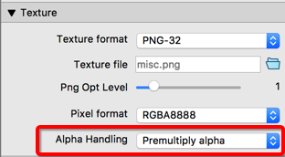
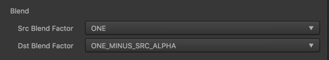
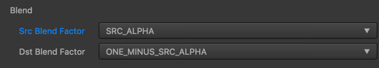
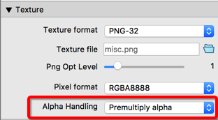
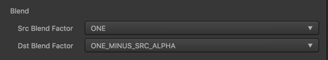
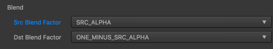

关于Premultiply Alpha引发的渲染有黑边
这里只说明一上做法：
TexturePacker 打包时设置成 Premultiply alpha

同时在Sprite组件中设置Blend如下：

而其他正常的png

相关帖子
http://forum.cocos.com/t/creater-blend-premultiply-alpha/43260
这里只说明一上做法：

同时在Sprite组件中设置Blend如下：


http://forum.cocos.com/t/creater-blend-premultiply-alpha/43260